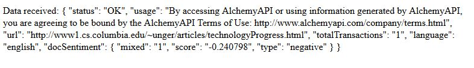

How to get the information we want, and what it means.
The payload we sent was constructed out of three key value pairs in the following four lines:
var apiKey = "apikey=yourkey";
var urlSent = "url=http://www1.cs.columbia.edu/~unger/articles/technologyProgress.html";
var outMode = "outputMode=json";
var payload = apiKey + "&" + urlSent + "&" + outMode;
The first is simply your API key. The second indicates the URL of the webpage we want to be analyzed, which is an article discussing whether technology is always beneficial. The third indicates how we want to receive our response. In this case, I have chosen a JSON object, but other options are available. We can add additional key-value pairs in order to get more detailed information, but for now lets look at the response:
Here I am only showing the data received in order to keep my key hidden. We see that the request and response worked, and some terms of use, and then the URL sent and the number of transactions used (remember we have 1000 per day). Now, the interesting data that we wanted. The AI thinks that there were mixed opinions presented, indicated by "mixed": "1" instead of "mixed": "0", but that the overall sentiment was slightly negative. The score here can range from -1 to +1, so this score is not far from neutral.
Pretty cool, huh? Well, OK, slightly cool. If this was all AlchemyAPI could do, it would not be worth all the trouble. So next, lets look at some of the other information we can get out of piece of text...